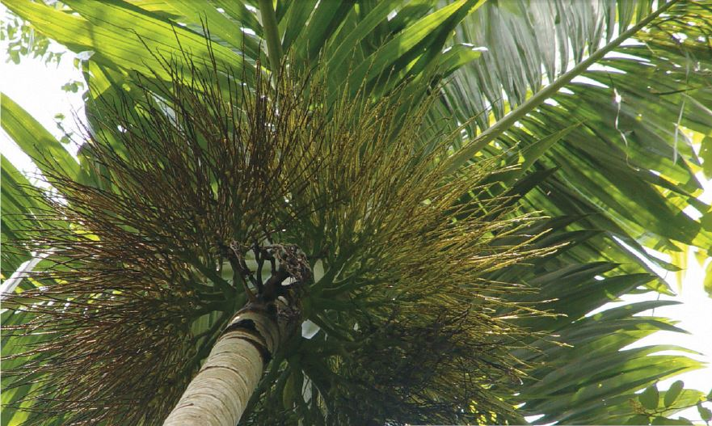
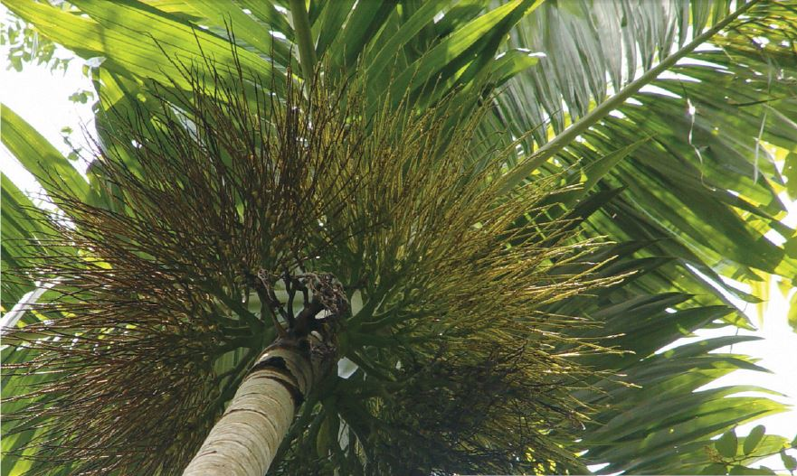

:ข้อมูลทั่วไปของต้นหมาก
ต้นหมาก : ชื่อสามัญ Areca nut, Areca nut palm, Areca palm, Betel nut palm, Betel Nuts
ต้นหมาก : ชื่อวิทยาศาสตร์ Areca catechu L. จัดอยู่ในวงศ์ปาล์ม (ARECACEAE) ซึ่งแต่เดิมใช้ชื่อวงศ์ว่า PALMAE หรือ PALMACEAE
สมุนไพรหมาก : มีชื่อท้องถิ่นอื่น ๆ ว่า หมากเมีย (ทั่วไป), หมากสง (ภาคใต้), แซ (กะเหรี่ยง-แม่ฮ่องสอน), สีซะ (กะเหรี่ยง-ภาคเหนือ), มะ (ชอง-ตราด), เซียด (ชาวบน-นครราชสีมา), ปีแน (มลายู-ภาคใต้), ปิงน๊อ (จีนแต้จิ๋ว), ปิงหลาง (จีนกลาง) เป็นต้น

 
